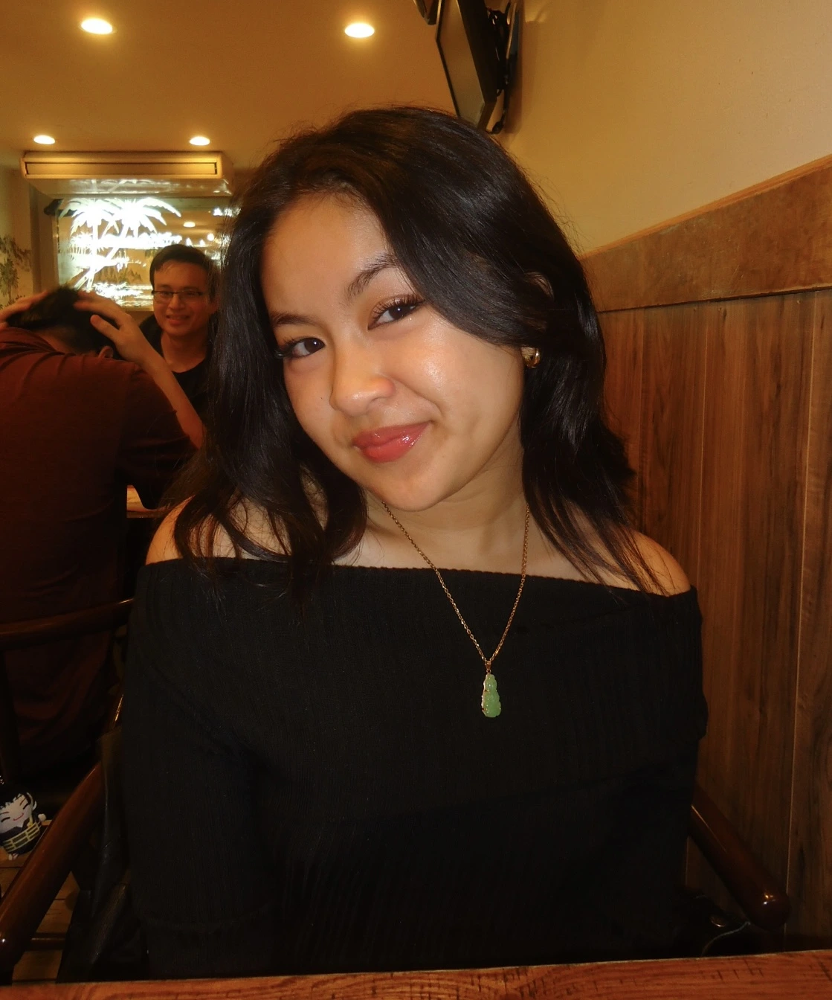

c
Beyond the professional world, I am a Vietnamese-American born and raised in Philadelphia. I love to explore all kinds of art. Whether that be music, painting, photography, etc… I have a passionate appreciation for art and it provides an escape for me. One of my favorite hobbies lately is getting more into video games. I have always enjoyed games but as I learned more about how game designers work together to create a game, it just makes it all the more better. My recent favorite is Stardew Valley and I highly recommend it to others if you are looking for a relaxing game with a cute and cozy art style. I also have always been a lover of cats and have one of my own (Astrid)!
I am excited to continue my academic journey at Drexel and grow not only as a person but also as a UX designer!